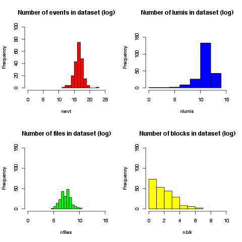

DCAFPilot for CMS
pilot project for CMS computing data-mining
Talk outlines
- Project outlines
- First dataset
- Data
- Predictions
- Future direction
DCAFPilot stands for Data and Computing Analysis Framework. It is initiative within DMWM analytics group to imporve our understanding of CMS computing data.
Ultimately we'd like to learn from CMS data and make prediction to improve our resource utilization.
Initial goal was to predict popularity of datasets on weekly basis.
Project outlines
The DCAFPilot consists of several components:
Setup and dependencies:
Data collection flow
- Divide workflow on weekly basis
- Collect all datasets (4 DBS instances) into internal cache
- Collection popular datasets from PopularityDB
- Get summary for datasets from DBS/Phedex/SiteDB/Dashboard data-services
- Complement dataframe with random set of DBS datasets which were not visible in popularity for given time internval
- DBS: datasets, releases, filesummaries APIs
- Phedex: blockReplicas API
- SiteDB: site-names, people APIs
- PopularityDB: DSStatInTimeWindow API
- Dashboard: jobefficiencyapi API
Data & Statistics
id,cpu,creator,dataset,dbs,dtype,era,nblk,nevt,nfiles,nlumis,nrel,nsites,parent,primds,proc_evts,procds,rel1_0,rel1_1,rel1_2,rel1_3,rel1_4,rel1_5,rel1_6,rel1_7,rel2_0,rel2_1,rel2_10,rel2_11,rel2_2,rel2_3,rel2_4,rel2_5,rel2_6,rel2_7,rel2_8,rel2_9,rel3_0,rel3_1,rel3_10,rel3_11,rel3_12,rel3_13,rel3_14,rel3_15,rel3_16,rel3_17,rel3_18,rel3_19,rel3_2,rel3_20,rel3_21,rel3_22,rel3_23,rel3_3,rel3_4,rel3_5,rel3_6,rel3_7,rel3_8,rel3_9,relt_0,relt_1,relt_2,s_0,s_1,s_2,s_3,s_4,size,tier,wct,target
999669242,207737071,2179,20186,3,0,759090,6,21675970,2158,72274,1,10,5862538,335429,30667701,373256,0,0,0,0,1,1,0,0,0,0,0,0,1,1,0,0,0,0,0,0,0,0,0,0,0,0,0,0,0,0,0,0,1,0,0,0,0,0,0,0,0,0,1,0,1,0,1,0,3,8,0,0,8002,5,216946588,0.006
332990665,114683734,2179,176521,3,1,759090,88,334493030,32621,86197,1,4,6086362,968016,123342232,1037052,0,0,0,0,1,2,0,0,0,0,0,0,1,2,0,0,0,0,0,0,0,0,0,0,0,0,0,0,0,0,0,0,1,0,0,0,0,0,0,0,0,1,1,0,1,0,2,0,6,9,0,0,96689,3,276683510,0.008
....
Queried 5 CMS data-services: DBS, Phedex, SiteDB, PopularityDB, Dashboard
Placed ~610K queries, ~345K went to data-services and
the rest used internal cache
Used ~217K datasets from 4 DBS instances
The final dataframe is constructed out of 71 variables and has 46 files and ~114K rows
- each file is worth of 1 week of CMS data
The average size of the object is 1KB, ~0.6GB of CMS data
Elapsed time: ~2h to 25m per job
Live Data plots

Live Data plots, cont'd

Live Data plots, cont'd

Correlations

What we're looking for

How to train your model
Usage: model.py [options]
Options:
-h, --help show this help message and exit
--scaler=SCALER model scalers: ['StandardScaler', 'MinMaxScaler'], default None
--scorer=SCORER model scorers: ['accuracy', 'adjusted_rand_score', 'average_precision',
'f1', 'log_loss', 'mean_absolute_error', 'mean_squared_error',
'precision', 'r2', 'recall', 'roc_auc'], default None
--learner=LEARNER model learners: ['AdaBoostClassifier', 'AdaBoostRegressor',
'BagginRegressor', 'BaggincClassifier', 'BernoulliNB',
'DecisionTreeClassifier', 'ExtraTreesClassifier',
'GaussianNB', 'GradientBoostingClassifier',
'GradientBoostingRegressor', 'KNeighborsClassifier',
'LinearSVC', 'PCA', 'RandomForestClassifier',
'RandomForestRegressor', 'RidgeClassifier',
'SGDClassifier', 'SGDRegressor', 'SVC', 'SVR',
'lda_rfc', 'pca_knc', 'pca_rfc', 'pca_svc'], default RandomForestClassifier
--learner-params=LPARAMS
model classifier parameters, supply via JSON
--train-file=TRAIN train file, default train.csv
--test-file=TEST test file, default no test file
--gsearch=GSEARCH perform grid search, gsearch=parameters
--predict=PREDICT Prediction file name, default None
First results
# merge all 2014 files into single file
merge_csv --fin=CMS-DMWM-Analytics-data/Popularity/DCAFPilot/data/0.0.2 \
--fout=2014.csv.gz --verbose
# Train the model
model --learner=RandomForestRegressor --train-file=2014.csv.gz --scorer=r2
RandomForestRegressor(bootstrap=True, compute_importances=None,
criterion='mse', max_depth=None, max_features='auto',
max_leaf_nodes=None, min_density=None, min_samples_leaf=1,
min_samples_split=2, n_estimators=10, n_jobs=1, oob_score=False,
random_state=None, verbose=0)
Score metric (r2): 0.897606379597
Final Logloss 0.000383744987074
First results, prediction
model --learner=RandomForestRegressor --train-file=2014.csv.gz --scorer=r2 --newdata=skll/cms/dataframe-20141119-20141126.csv.gz --predict=pred.txt
RandomForestRegressor(bootstrap=True, compute_importances=None,
criterion='mse', max_depth=None, max_features='auto',
max_leaf_nodes=None, min_density=None, min_samples_leaf=1,
min_samples_split=2, n_estimators=10, n_jobs=1, oob_score=False,
random_state=None, verbose=0)
Score metric (r2): 0.93623237727
Final Logloss 0.000381044756446
Traceback (most recent call last):
...
File "/Users/vk/CMS/DMWM/GIT/DMWMAnalytics/Popularity/DCAFPilot/src/python/DCAF/ml/model.py", line 165, in model
predictions = fit.predict(tdf)
File "/opt/local/Library/Frameworks/Python.framework/Versions/2.7/lib/python2.7/site-packages/sklearn/ensemble/forest.py", line 564, in predict
if getattr(X, "dtype", None) != DTYPE or X.ndim != 2:
File "/opt/local/Library/Frameworks/Python.framework/Versions/2.7/lib/python2.7/site-packages/pandas/core/ops.py", line 600, in wrapper
res = na_op(values, other)
File "/opt/local/Library/Frameworks/Python.framework/Versions/2.7/lib/python2.7/site-packages/pandas/core/ops.py", line 564, in na_op
raise TypeError("invalid type comparison")
TypeError: invalid type comparison
Some data requires normalization/scaling, e.g. cpu/wct were generated as long's, while should be floats.
Use consistent random seed to avoid results deviations
First results, prediction w/ scaling
# run model with scaler
model --learner=RandomForestRegressor --train-file=2014.csv.gz --scorer=r2 --newdata=skll/cms/dataframe-20141119-20141126.csv.gz --predict=pred.txt --scaler=StandardScaler
RandomForestRegressor(bootstrap=True, compute_importances=None,
criterion='mse', max_depth=None, max_features='auto',
max_leaf_nodes=None, min_density=None, min_samples_leaf=1,
min_samples_split=2, n_estimators=10, n_jobs=1, oob_score=False,
random_state=None, verbose=0)
Score metric (r2): -4.22807249175
Final Logloss 0.00572480564966
# check our prediction
check_prediction --fin=skll/cms/dataframe-20141119-20141126.csv.gz --fpred=pred.txt
Explaied variance score: 0.898592908177
Mean absolute error : 0.000386050647644
Mean squared error : 2.42792029612e-06
R2 score : 0.896133210959
Other algorithms
model --learner=AdaBoostRegressor --train-file=2014.csv.gz --scorer=r2 --scaler=StandardScaler
AdaBoostRegressor(base_estimator=None, learning_rate=1.0, loss='linear',
n_estimators=50, random_state=None)
Score metric (r2): -0.943959694892
model --learner=BaggingRegressor --train-file=2014.csv.gz --scorer=r2 --scaler=StandardScaler
BaggingRegressor(base_estimator=None, bootstrap=True,
bootstrap_features=False, max_features=1.0, max_samples=1.0,
n_estimators=10, n_jobs=1, oob_score=False, random_state=None,
verbose=0)
Score metric (r2): -2.11591876017
model --learner=SGDRegressor --train-file=2014.csv.gz --scorer=r2 --scaler=StandardScaler
SGDRegressor(alpha=0.0001, epsilon=0.1, eta0=0.01, fit_intercept=True,
l1_ratio=0.15, learning_rate='invscaling', loss='squared_loss',
n_iter=5, penalty='l2', power_t=0.25, random_state=None,
shuffle=False, verbose=0, warm_start=False)
Score metric (r2): -3.12784471837e+24
Online learning algorithm
vklaptop(13:07:30)> csv2vw --csv=2014.csv.gz --vw=2014.vw
vklaptop(12:08:47)> head -2 2014.vw
0.006 '999669242 |f size:8002 nevt:21675970 creator:2179 wct:216946588 dtype:0 dataset:20186 procds:373256 nfiles:2158 dbs:3 rel3_8:1 rel3_22:0 rel3_20:0 rel3_21:0 rel3_7:0 rel3_6:0 rel3_5:0 rel3_4:0 rel3_3:0 rel3_2:1 rel3_1:0 rel3_0:0 nsites:10 rel3_9:0 rel3_23:0 rel2_8:0 rel2_9:0 rel2_6:0 rel2_7:0 rel2_4:0 rel2_5:0 rel2_2:1 rel2_3:1 rel2_0:0 rel2_1:0 parent:5862538 rel1_1:0 rel1_0:0 rel1_3:0 rel1_2:0 rel1_5:1 rel1_4:1 rel1_7:0 nrel:1 rel3_17:0 rel3_16:0 rel3_15:0 nblk:6 rel3_13:0 rel3_12:0 rel3_11:0 rel3_10:0 tier:5 primds:335429 rel1_6:0 rel2_10:0 rel2_11:0 rel3_19:0 rel3_18:0 s_1:3 s_0:0 s_3:0 s_2:8 s_4:0 relt_0:1 relt_1:0 relt_2:1 rel3_14:0 era:759090 nlumis:72274 proc_evts:30667701 cpu:207737071
0.008 '332990665 |f size:96689 nevt:334493030 creator:2179 wct:276683510 dtype:1 dataset:176521 procds:1037052 nfiles:32621 dbs:3 rel3_8:1 rel3_22:0 rel3_20:0 rel3_21:0 rel3_7:1 rel3_6:0 rel3_5:0 rel3_4:0 rel3_3:0 rel3_2:1 rel3_1:0 rel3_0:0 nsites:4 rel3_9:0 rel3_23:0 rel2_8:0 rel2_9:0 rel2_6:0 rel2_7:0 rel2_4:0 rel2_5:0 rel2_2:1 rel2_3:2 rel2_0:0 rel2_1:0 parent:6086362 rel1_1:0 rel1_0:0 rel1_3:0 rel1_2:0 rel1_5:2 rel1_4:1 rel1_7:0 nrel:1 rel3_17:0 rel3_16:0 rel3_15:0 nblk:88 rel3_13:0 rel3_12:0 rel3_11:0 rel3_10:0 tier:3 primds:968016 rel1_6:0 rel2_10:0 rel2_11:0 rel3_19:0 rel3_18:0 s_1:6 s_0:0 s_3:0 s_2:9 s_4:0 relt_0:1 relt_1:0 relt_2:2 rel3_14:0 era:759090 nlumis:86197 proc_evts:123342232 cpu:114683734
Online learning algorithm, cont'd
# train our model
vw -d 2014.vw -c -k -f model.vw
Num weight bits = 18, learning rate = 0.5, initial_t = 0, power_t = 0.5
average since example example current current current
loss last counter weight label predict features
0.000036 0.000036 1 1.0 0.0060 0.0000 29
...
0.000014 0.000010 65536 65536.0 0.0010 0.0000 46
finished run, number of examples per pass = 113908, passes used = 1
weighted example sum = 113908
weighted label sum = 41.78
average loss = 1.29019e-05
best constant = 0.000366787
best constants loss = 0.000366653
total feature number = 6071657
# make prediction
vw -d new.vw -t -i model.vw -p preds.txt
# convert VW prediction into CSV format
vw_pred2csv --fin=preds.txt --fout=preds.csv
# check VW prediction against data sample
check_prediction --fin=skll/cms/dataframe-20141119-20141126.csv.gz --fpred=preds.csv
RandomForestRegressor VW regression
Explaied variance score: 0.898592908177 0.341559976762
Mean absolute error : 0.000386050647644 0.000349310257493
Mean squared error : 2.42792029612e-06 1.54817975922e-05
R2 score : 0.896133210959 0.337686411265
From data to prediction
# merge dataframes
merge_csv --fin=CMS-DMWM-Analytics-data/Popularity/DCAFPilot/data/0.0.2 \
--fout=2014.csv.gz --verbose
# train the model
vklaptop(14:36:44)> model --learner=RandomForestRegressor --train-file=2014.csv.gz --scorer=r2 --newdata=skll/cms/dataframe-20141119-20141126.csv.gz --predict=pred.txt --scaler=StandardScaler --learner-params='{"random_state":123}'
RandomForestRegressor(bootstrap=True, compute_importances=None,
criterion='mse', max_depth=None, max_features='auto',
max_leaf_nodes=None, min_density=None, min_samples_leaf=1,
min_samples_split=2, n_estimators=10, n_jobs=1, oob_score=False,
random_state=123, verbose=0)
Score metric (r2): -12.6244503822
# check prediction
vklaptop(14:38:35)> check_prediction --fin=skll/cms/dataframe-20141119-20141126.csv.gz --fpred=pred.txt
Explaied variance score: 0.82718229836
Mean absolute error : 0.000560324232394
Mean squared error : 4.2115601847e-06
R2 score : 0.819828832958
# convert prediction into human/CMS data format
vklaptop(14:38:44)> pred2dataset --fin=pred.txt --fout=pred.txt.out
# inspect prediction
vklaptop(14:39:13)> head -3 pred.txt.out
0.23900000005960464,/GenericTTbar/HC-CMSSW_7_0_4_START70_V7-v1/GEN-SIM-RECO
0.007299999927636236,/QCD_Pt-15to3000_Tune4C_14TeV_pythia8/SHCAL2023Upg14DR-PU140bx25_PH2_1K_FB_V4-v1/GEN-SIM-RECO
0.025100000109523533,/SingleMu/Run2012D-22Jan2013-v1/AOD
Future direction
- Explore various ML algorithms both within python sklearn toolkit and R
- Try out different popularity metrics
- Test predictions with real data
- Try out online learners (may work better with time-dependent features)
- Automate tools (weekly crontabs, generate model updates, verify model predictions)